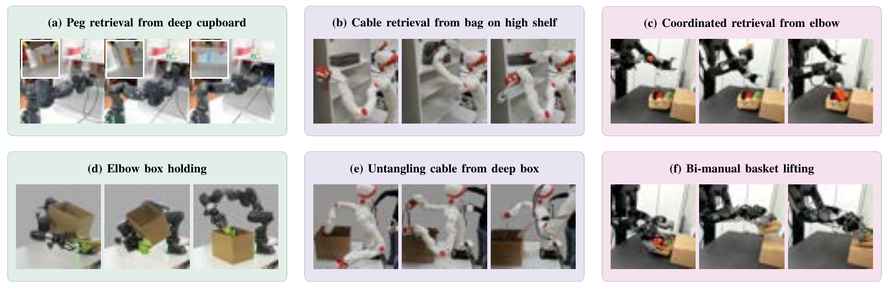
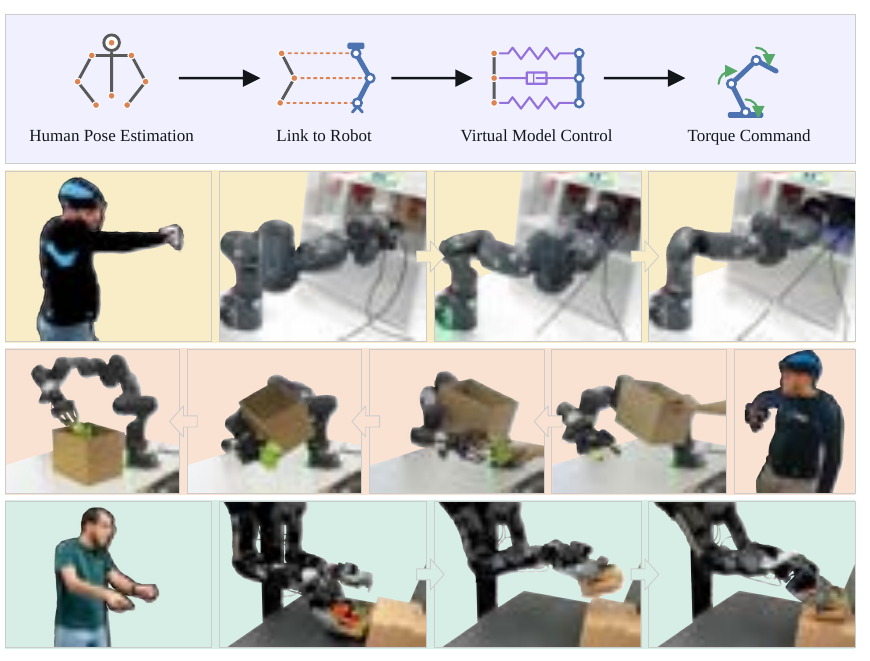
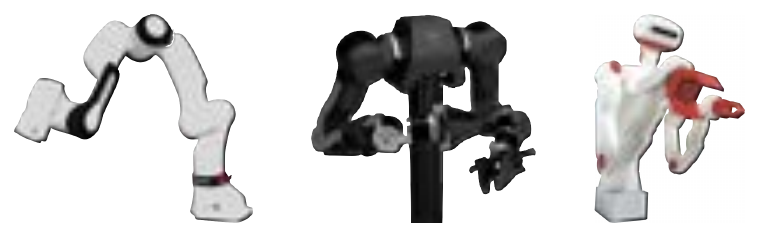
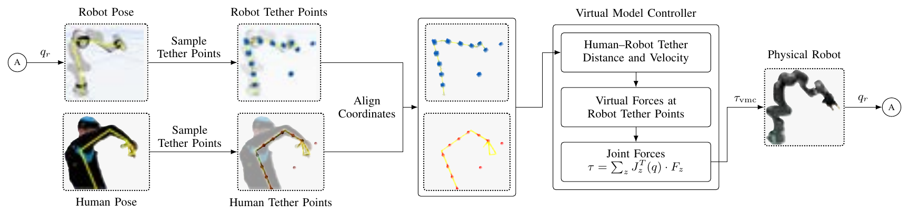
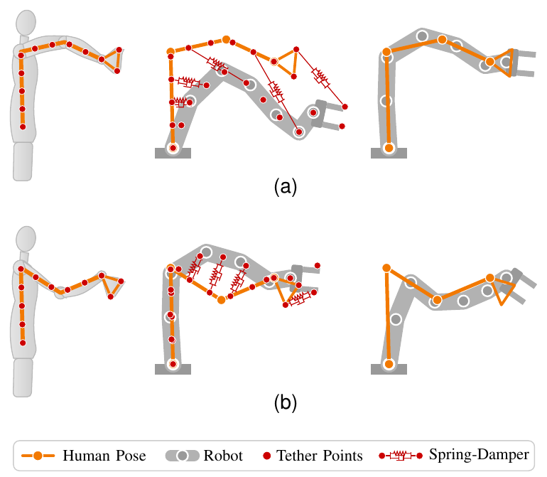

WARM-T
WARM-T
Research paper · Project page
WARM-T: A Whole Arm Teleoperation Framework for Dexterous Manipulation and Robot Learning
1 Department of Engineering, University of Cambridge, Cambridge, UK · * Corresponding author
Supported by the Engineering and Physical Sciences Research Council and AgriFoRwArdS CDT [EP/S023917/1].
Abstract
Teleoperation of robot arms is the backbone of dataset collection for imitation learning methods. Existing human-to-robot teleoperation solutions typically rely on mapping the human hand pose to the robot end-effector, rendering them ineffective for whole-arm teleoperation of redundant robot arms where null-space control is necessary for task execution. In this work, we propose WARM-T, a Whole-ARM Teleoperation framework that enables the intuitive control of the full robot arm articulation. Our method bridges the morphology difference between the human and the robot arm by leveraging virtual model control, enabling the operation of different robot arms using a single algorithm. We demonstrate tasks where null-space control is crucial for success and highlight how the compliance and low-latency properties inherent to our approach enhance task performance. Finally, we show that the collected data can be used to train robotic policies for autonomous manipulation.
01 / Demonstrations
Whole-arm manipulation across platforms
WARM-T applies a single retargeting heuristic across heterogeneous 7-DOF robot arms, enabling reaching into tight spaces, elbow-assisted manipulation, bimanual coordination, and contact-rich data collection.



02 / Methodology
Architecture & virtual model control
Instead of solving iterative inverse kinematics, WARM-T samples corresponding tether points along the human and robot arms and connects each pair with virtual springs and dampers, converting virtual Cartesian forces directly into joint torques via forward kinematics and pre-computed Jacobians.


03 / Reference
Citation
If you use this work, please cite the paper:
@article{zhou2026warmt,
title = {WARM-T: A Whole Arm Teleoperation Framework for Dexterous Manipulation and Robot Learning},
author = {Liyou Zhou and Omar Faris and Sebastian Pattinson and Fulvio Forni},
year = {2026}
}